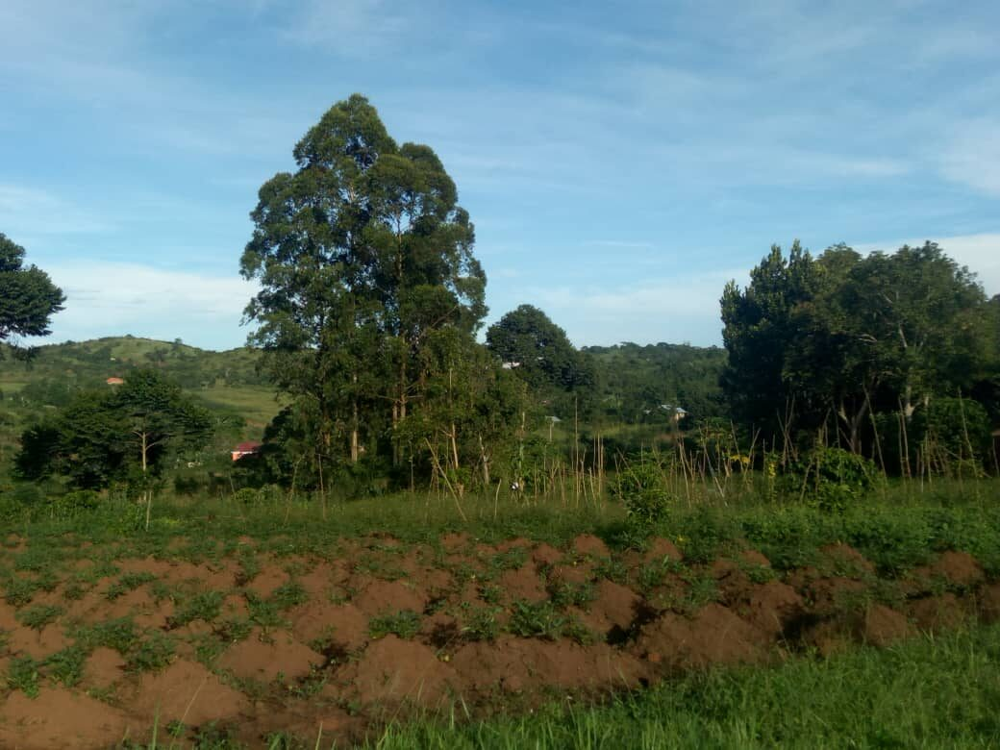

Home / Conservation & Ecotourism
Programs 5 & 6 · Ecological justice
Biodiversity, Conservation & “Land of Elephants”
True institutional sustainability means generating our own wealth to finance environmental defense.

Program 5
Nsinde Ecotourism Research & Resource Centre
Located on titled waterfront land along the Nsinde-Rwamaswajwa River, a vital tributary of the Muzizi River flowing into Lake Albert, Nsinde Eco-Beach operates as a thriving commercial eco-hospitality destination welcoming over 10,000 visitors annually.
100% of commercial hospitality profits are ring-fenced to fund two permanent conservation engines.
Hydrological Basin Research Station
An on-site water-quality testing laboratory monitoring agricultural runoff, mining chemical waste and industrial pollution across the Muzizi–Lake Albert watershed.
Riverbank Reforestation Engine
Community-managed indigenous tree nurseries supplying thousands of seedlings annually to restore degraded riverbanks, water catchments and faith-institution buffer zones. 80,000+ indigenous trees planted to date.




Program 6
Wildlife Conservation, Anti-Poaching & Ecological Justice
Reclaiming Kyenjojo's historic identity as Enjojo, “The Land of Elephants”, across Matiri, Itwara, Muhangi, Kitechura, Nkera, Kibego, Ibambaro, Buhungiro, Rwensambya and Bugoma Central Forest Reserves, Kibale National Park and Toro-Semliki Wildlife Reserve. WUFBON mobilizes 800 religious leaders, 146 FBOs and green livelihoods to halt biodiversity loss.


Co-invest in community-owned assets
Your contribution is catalytic seed capital for revenue-generating social enterprises that sustain themselves.